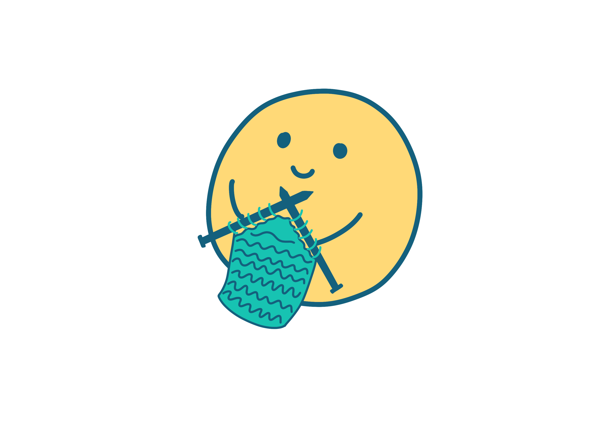
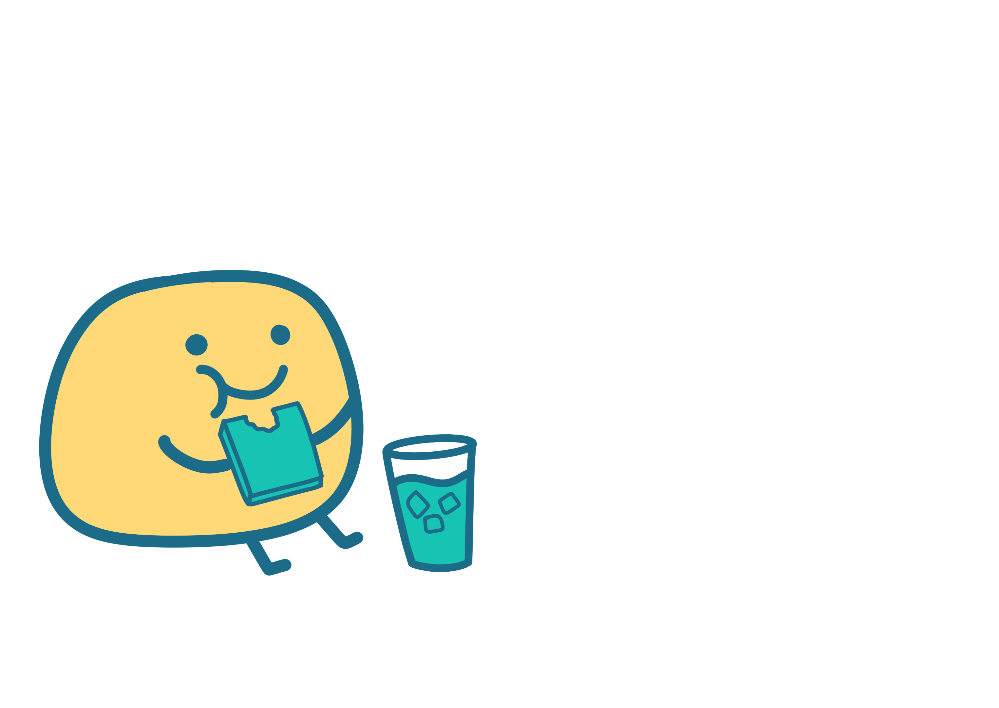
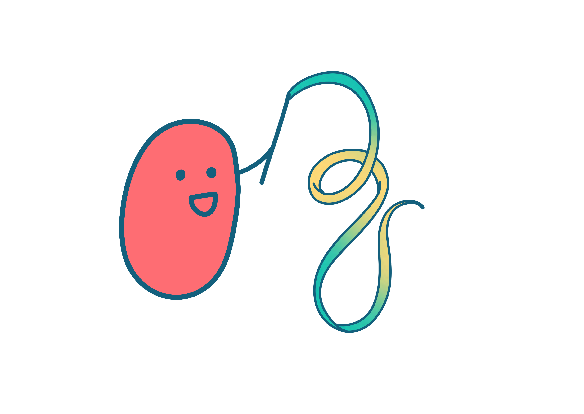

Agenda
10:30
1:15
Break
1:30
3:00
Break
3:30
5:00
9:30–10:30am
Kick-off + Breakfast
Hosted by FoL '26 team, 3rd Floor Atrium
Join us in the atrium to kick off the 2026 Festival of Learning with "Registration," a.k.a. Make Your Own Name Tag, pick up your FoL swag, enjoy coffee and a pick-your-own-cereal bar, and learn about our sessions this year!
Note: Checking in with your RSVP at Registration gets you a mug!
10:30–12:00pm
Workshops Session 1

Stitch & Bitch
Hosted by Kye Shimizu and Lucy Li, 3rd Floor Atrium
Cozy up with colorful yarns and learn to knit! Learn to make a warm scarf for Boston winters, or bring your own project to work on. Explore hand knitting basics, try out a hand knitting machine and circular knitting toys, and experiment with conductive yarns. Complete beginners and experienced knitters are welcome.
Modern Day Treasure Hunting (the Art of FB Marketplace)
Hosted by Katie Morrell, E15-359
Furnishing an apartment? Collecting rare books? Searching for the perfect gunnysack dress? You name it! It's on Facebook Marketplace. Come learn the art of the FB algorithm, messaging strangers, and successfully picking up your next Facebook treasure!
What The Bl*ck
Hosted by Cyrus Clarke, E14-393
Demystify blockchain through play! What The Block is a hands-on multiplayer game that turns blockchain concepts into physical play. Using LEGO, NFC, and live transactions, participants learn about trust, consensus, and value by negotiating and building together. No prior blockchain knowledge required.
Pre-registration required, RSVP to get a spot.
Travelogue Onigiri & Miso Soup
Hosted by Lisa Breede, 3rd Floor Kitchen
Take a culinary journey to Japan! Learn to make onigiri (savory rice balls) and miso soup from scratch (easy & fast). Get hands-on in the kitchen and enjoy the delicious results together.
Pre-registration required, RSVP to get a spot.

DJ Crash Course
Hosted by Philip Tan, E15-314
Curious about DJing? Want to mix for 99F? Start the day with a quick introductory talk about the gear, software, and concepts. Then come back later in the day with your music to get some hands-on experience!
Bring a laptop with DJ software installed (Rekordbox, Serato DJ Pro, Djay Pro, or Virtual DJ).
12:00–1:15pm
MAS Lunch + Crazy AND Cool Pitch Session
Hosted by Andy, and Cassie, and Kush
"Wouldn't it be awesome if we, at the Lab, did X?" In this session, Media Labbers will pitch totally crazy but cool projects that could spark new research. Grab your lunch, take a seat, and cheer them on! Then, contribute your crazy ideas to a collective brainstorm.
1:30–3:00pm
Workshops Session 2
How To Improvise Music
Hosted by Mike Jiang, E15-359
Learn the art of musical improvisation! Start with improvising rhythms, then melodies, before putting it all together over a song. Practice trading musical ideas with others and explore advanced concepts. Whether you're a seasoned musician or a curious beginner, learn to build your musical instincts and create in the moment.
Bring a laptop with wired headphones, or acoustic instruments.
Real Estate "Do's and don'ts" for students
Hosted by Xan Foote, E14-393
Navigate the Boston rental market like a pro! Learn about your rights as a tenant, essential do's and don'ts when apartment hunting, what your agent is actually responsible for, and what that broker fee really covers. Walk away with practical knowledge to protect yourself and find your perfect home.
AI Radio Show
Hosted by Manaswi Mishra, 3rd Floor Atrium
Step into the AI Radio Show: an interactive music installation where your prompts are turned into music live! Submit your ideas and hear them transform into music in real-time, creating a crowd-sourced music radio network.
How to Use Panorama in Almost Anything
Hosted by Yufeng Zhao, E14-240
See how 360° photos (especially Google Street View) can be used for 3D scanning, text recognition, object detection, and more through custom workflows. Then get hands-on: use a 360 camera to capture the lab and process your images in various creative ways.
Plant Parenthood
Hosted by Elinor Poole-Dayan, E14-514B & cafe sink area
Yes, you really can keep a houseplant alive - we promise! Give houseplant cuttings (pothos, spider plant, and other cool species) a new home in either a pot with soil or a glass jar to brighten up your space. We'll explore the basics of plant care, beginner-friendly species, what to look for when shopping, and how to manage your growing collection. Learn to diagnose common issues like over/under watering, humidity problems, and light needs. New this year: bring your own plant for a repot or propagation session!
3:30–5:00pm
Workshops Session 3

Ribbon Twirling
Hosted by Marina, 3rd Floor Atrium
Experience the joy of ribbon twirling! Drop by to try your hand at twirling colorful ribbons through the air in this playful, meditative activity. No experience needed, just bring your sense of fun and some space to move. This is a drop-in session, so stop in any time!
Music Production for Humans
Hosted by Eitan Wolf, E15-359
Are you a human being? Have you ever wondered how your favorite songs are built? If so, come to this hands-on workshop, where we'll explore the building blocks of what make tracks tick – beats, melodies, samples, and effects. Let's learn together as we try to encode emotion into sound!
No experience needed, but if you'd like to follow along to start your own track, we'll primarily be using GarageBand for Mac/iOS.
Practicing Difficult Conversations: Choice, Care, and Communication
Hosted by Alma Jam, E14-393
This year has brought challenging moments for many in our community. When conversations about difficult or sensitive topics feel risky, how do we still connect with care and intention? This workshop offers a structured, choice-based space to practice engaging in hard conversations. Rather than focusing on specific events or personal stories, we'll center on how we speak and listen when things get tough. Practice simple communication tools through hypothetical scenarios, all at your own pace. No personal disclosure expected, no recording, no pressure.
Introduction to Machine Sewing
Hosted by Meghan Jordan, LUNA Lab
Learn to make your own tote bag! Discover the parts of a sewing machine, how to thread it, and master basic stitching techniques. Then put your new skills to work creating a practical tote bag you can take home and use. Perfect for complete sewing beginners!
Pre-registration required, RSVP to get a spot.